Chapter 6 Climate change adaptation assessment
6.1 Observed climate impacts
The general aspects of the climate and environment of Malawi have been covered in sections 1.1 and 5.1.1 above. In this section, emphasis is on the impacts of observed climate on the identified systems, for which the impacts of climate extreme events are summarised in Table 4 below.
Hazard | Event Data | Impacts | Impacted ecosystems |
Drought | 1960-2014 | · Increasing drought frequency and intensity | Crop production |
· Seven severe droughts experienced since 1991 | Livestock production | ||
· The droughts of 1991/92 and 1993/94 impacted very severely on agriculture - maize production declined by 60% in 1991/92 -equivalent of only 45% of average production levels for the previous five years | Rural water supply | ||
· Annual loss of maize production by 4.6 % | Health | ||
· Malawi food crisis marked in 2002 | Agriculture market and trade | ||
· Depleted food reserves | Forestry | ||
· Deforestation | Urban food planning | ||
· Water scarcity and elevated poverty levels | Ecosystems | ||
· Increased vegetation loss | |||
· Increased irrigation by rural small holder farmers, 90 % of the farmers in Malawi | |||
· Disruption of hydroelectric power generation at Lake Malawi 1991-1994 | |||
Floods | 1967-2014 | · A total of 19 floods recorded, causing decreased food supply | Crop production |
· Shire River flooding and property destruction – it registered almost three-quarters of the total flood-related economic losses in the past ten years | Health | ||
· Shortage in agricultural produce and food crisis | Energy | ||
· Damage to infrastructure – resulting is $ 60 million loss | Urban water supply (Mzuzu City) | ||
· Decreased annual maize production by 12 % | Agriculture market and trade | ||
· Average loss of 0.7 % of the annual GDP | Transport | ||
· Agricultural losses are estimated at 3.5 to 8.2 % of GDP during RP5 and RP50 floods | Riverbank flood planning | ||
· Mzuzu city floods – Fifteen settlements were affected, 19,000 people displaced, seven people killed, and seven camps were set up for the displaced | Sewerage waste management system (Mzuzu city) | ||
· Chronic and acute respiratory diseases reported | |||
· 4,901,344 confirmed cases of malaria and 3,614 deaths were reported by the World Health Organization in 2017 | |||
· Increased poverty rate by 0.9% per annum | |||
Heavy storms | La Niña | · Unusually high rainfall events | Crop production |
2000/01 | · Very low crop yields – causing waterlogging. | Agriculture market and trade | |
· Increased leaching of soil nutrients | Ecosystem | ||
Land degradation | 2001- 2014 | · The average annual national soil loss rates in 2014 were estimated at 29 tons per hectare. | Forestry |
· The annual land degradation costs between 2001 and 2009 is estimated at USD 244 million per year –equivalent to 6.8% of Malawi’s GDP | Ecosystem | ||
Crop production | |||
Intense Heat | · Decreasing lake levels | Ecosystems | |
· Decreased fish catches | Health – link to fish nutrition value | ||
· Dry river and reduced surface water flow | Agriculture market and trade | ||
Energy | |||
Increased temperature | 1960-2006 | · Increased temperatures of 0.9°C between 1960 and 2006, with an average rate of 0.21°C per decade | Crop production |
· Reduced hydropower generation at the Lujeri Micro-Hydropower Scheme in southern Malawi during 1980–2011 | Livestock production | ||
Ecosystems | |||
Energy | |||
Low rainfall | Mid 1980s – 2014 | · Decreased precipitation in Chilwa basin | Crop production |
El Niño 1997/1998 | · Reduced surface water flows | Livestock production |
Figure 2: Common shocks experienced from flooding in 2016-2017 Mzuzu town according to the IHS3 (Kita 2017)
The average temperature in Malawi ranges from 8°C in the northern highlands to 38 °C in the lowland regions around Lake Malawi and the Lower Shire Valley (Nhamo et al., 2019). Since the 1960s, Malawi has recorded an annual mean temperature rise of 0.9°C (Parrish et al., 2020). Analysed data from 1960 to 2007 showed increasing drought frequency and intensity and the variability of rainfall, contributing to regional (SADC) insecurity of food and water (Nhamo & Muchuru, 2019). Malawi suffered seven severe droughts and 19 floods between 1967 and 2014 that adversely affected smallholders’ production and food security (Haug & Wold, 2017). As a result, trends in people in need of food assistance (Figure 3) have increased between 2012 and 2016 (Haug & Wold, 2017).
Figure 3. Trends in people in need of food assistance
Besides the severe droughts, frequent flood events remain a dominant impact of climate extremes in Malawi (Adeloye et al., 2015; IFPRI, 2020). Although local rainfall patterns are challenging to model accurately, an increase in the frequency and magnitude of drought and floods has been observed (Parrish et al., 2020). Malawi received the highest record rainfall for the country in 2015, causing severe flooding, especially in the Southern Region (Haug & Wold, 2017). According to Adeloye et al. (2015), rainfall in Shire of Malawi is about 2000 mm due to orographic influences. As a result, flooding is more prominent in the Shire valley. According to Malota and Mchenga (2019), the rural lower Shire Valley is most prone to flooding in the entire country - it registered almost three-quarters of the total flood-related economic losses in the past ten years. The Shire Basin is characterized by medium risk communities based on vulnerability and hazard - accounting for 8 of the 12 communities assessed (Adeloye, 2015). In the last decade alone, Malawi recorded an annual average loss of 12 % in maize yield production due to flood-related crop damage (Malota & Mchenga, 2019). The Mzuzu city experienced the worst floods ever recorded since its establishment in April 2016. Fifteen settlements were affected, 19,000 people were displaced, seven people were killed, and seven camps were set up to house the displaced (Kita, 2017). Figure 2 shows the percentage of households that suffered various flood-related shocks between 2016 and 2017 (Kita, 2017).
In Malawi, agriculture is the foundation of the economy (Ajefu & Abiona, 2020). It employs 85% of the workforce and generates one-third of the gross domestic product (GDP) and 90% foreign exchange earnings (Msowoya et al., 2016). Under the dominant land-use practice of ridge tillage, maize-based farming systems cultivated up to 80 % of the land area of the Lilongwe-Kasungu plains (Lark et al., 2020). Maize farming covers over 92% of Malawi’s agricultural land and accounts for over 54% of the national caloric intake (Msowoya et al., 2016). In the last decade alone, Malawi recorded an annual average loss of 12 % in maize yield production due to food-related crop damage (Malota & Mchenga, 2019). Malawi recorded a deficient national average maize production of 0.76 tons per hectare (t / ha) in 2005, 40 % below the expected average (Msowoya et al., 2016). There was also overall maize (the staple crop in the region) deficit of 5.1 million t, a 10% decrease in production compared to the previous year and a 15% drop compared to the 5-year average (Nhamo & Muchuru, 2019). The average national production growth rate in the 1980s was 3%, followed by a production decline rate of 2 % per annum from 1990 to 1994 (Msowoya et al., 2016). Figure 4a shows the agricultural contribution of Malawi to the total GDP, indicating a good correlation between the economic growth of Malawi and agricultural production. In contrast, the changes in maize production in Malawi between 1980 and 2011 are shown in Figure 4b, illustrating the instability of maize production and the steady rise in maize prices over the past decades. Because of climate change, the Lilongwe District, Malawi’s largest maize growing district, may decrease by up to 14 % by mid-century, rising to as much as 33 % by the end of the century (Msowoya et al., 2016). Small- and medium-scale farmers bear the brunt of floods, with recorded average annual production losses of 2.7 and 2.2 % respectively, compared to the small gains realized by large-scale farmers (IFPRI, 2020).
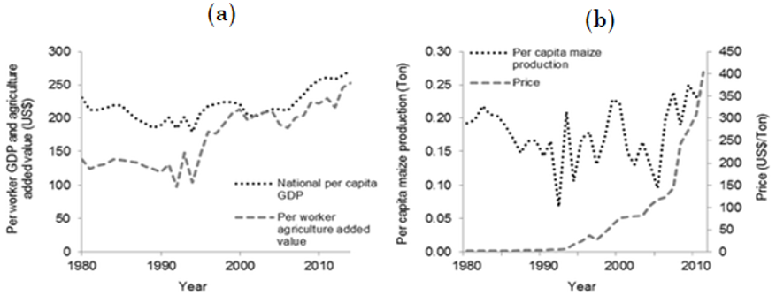 Figure 4: (a) Malawi’s per worker agricultural value-added and national per capita GDP adjusted for constant 2005 prices for 1980-2008 (World Bank 2015); and (b) per capita maize production and price for the same period (Chirwa et al. 2006; FAOSTAT 201)
Climate impacts on biodiversity have also been recorded in Malawi. Declining lake levels in Lake Malawi has resulted in a subsequent decline in terrestrial and aquatic biodiversity (Aragie et al., 2018; GCF, 2017). Besides, eutrophication of lakes has led to reduced biodiversity (Hughes et al., 2019a). Malawian fisheries, particularly for most people living in rural areas, are a source of animal protein (Limuwa et al., 2018). However, between the 1970s and 2015, Malawians’ fish consumption decreased by 60 % due to low fish catches (Limuwa et al., 2018).
Droughts and floods, the leading climate impacts in Malawi result in elevated poverty levels (Actionaid, 2002). On average, poverty is 1.3 % higher due to droughts and 0.9% higher each year due to floods (IFPRI, 2020). Lack of access to water, food insecurity, and low-income levels at the household level accelerates poverty during extreme climates (Hughes et al., 2019a). Table 5 demonstrates household livelihoods’ exposure to climate risks in the past ten years (Abdi et al., 2020).
Climatic shocks | Exposure | Exposure frequency (%) | ...4 | ...5 | ...6 |
Household (%) | None | 1-2 times | 3-5 times | More than 5 times | |
Droughts | 66 | 34 | 43.2 | 21.3 | 1.5 |
Floods | 41.2 | 58.8 | 32.1 | 8.3000000000000007 | 0.8 |
Crop pests and diseases | 48 | 52 | 32 | 11.7 | 4.3 |
Hailstorms | 33.299999999999997 | 66.7 | 27 | 5.7 | 0.6 |
Source: CIMMYT-led project on Sustainable Intensification of Maize and Legume Cropping Systems for Food Security in Eastern and Southern Africa (SIMLESA) (Abdi et al., 2020)
Changes in rainfall patterns are highly variable (Hughes et al., 2019a). Figure 5 presents the historical climate variability in Malawi between 1905 to 1998. Northern and Southern Malawi has experienced a drying trend since the early 2000s (Figure 6), while Malawi’s centre has seen slightly increased rains. Reports of extreme weather events that is, droughts, heavy rains, and floods) increased from just one during the 1970s to between 2000 and 2006.
Figure 5: Historic climate variability in Malawi.
(Source: The International Resources Institute for Climate and Society at Columbia University, derived from the Climate Research Unit at the University of East Anglia, the United Kingdom). Note: Yellow-red shading (drought) shows the country’s percentage that would experience lower than normal rainfall (to different degrees). Blue shading (floods) indicates the country’s percentage that would experience higher than normal rainfall linked to floods.
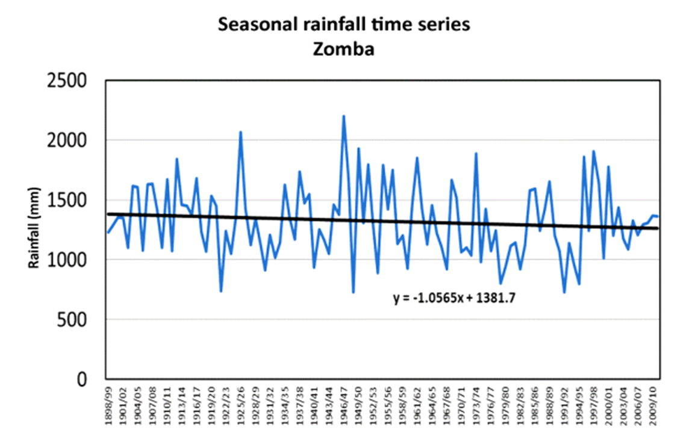 Source: (Jørstad & Webersik, 2016)
Temperature and Precipitation Anomalies in Malawi from 1950 to present (based on climatological period 1981-2010)
Temperature Anomaly
Precipitation Anomaly
Severe floods have been reported to damage infrastructure in Malawi (Hughes et al., 2019a). For example, the 2015 floods highlighted the transport sector’s vulnerabilities with severe damage caused to the infrastructure. For the transport sector, the total damages and losses due to the disaster were approximately USD 60 million, while the cost of recovery was approximately USD 130 million, the highest among all the sectors. Flood events have also reduced electric generation from hydropower energy (Mtilatila et al., 2020). Malawi is close to the bottom of the United Nations Human Development Index league, and one of the world’s lowest electricity access rates (Dauenhauer et al., 2020) exacerbates its extreme poverty levels. An estimated 16 million Malawians currently live without electricity or 91 % of the country’s population (Dauenhauer et al., 2020). Reduced hydropower generation at the Lujeri Micro-Hydropower Scheme in southern Malawi during 1980–2011 was attributed to increased temperature (Mtilatila et al., 2020).
Malawi has recorded 4,901,344 confirmed malaria cases and 3,614 deaths due to the disease were reported by the World Health Organization in 2017 (Frake et al., 2020). Areas with the highest risk of infection are concentrated in the Shire River valley along the Lake Malawi lakeshore and the central plains, which are characteristically hotter and wetter than other parts of the country. According to Frake et al. (2020), for Anopheles gambiae s.s., 7.25 % of Malawi exhibits suitable water conditions (water only), approximately 16 % for water plus another factor, and 8.60 % is maximally suitable, meeting thresholds of suitability for water presence, terrain features, and climate conditions. Almost 21% of Malawi is suitable for breeding based on land characteristics alone, and 28.24% is suitable for breeding based on climate and land characteristics alone (Frake et al., 2020).
6.2 Projected future climate
The temperature is anticipated to continue to rise by 1.1 to 3.0 ᵒC by the 2060s and by 1.5 to 5.0 ᵒC by the 2090s (Jørstad & Webersik, 2016). On the other hand, by the 2090s, annual rainfall is projected to decrease throughout Malawi by -14% (Future Climate for Africa, 2019a; GCF, 2017; Msowoya et al., 2016). Modelling of climate change scenarios predicts significant medium- and long-term changes to Malawi’s climate, in terms of both temperature and rainfall (Jørstad & Webersik, 2016). Extremes in temperatures (that is, hot and very hot days) are also more likely to occur more frequently (Hughes et al., 2019a). Figure 7 shows the potential highs and lows Malawi may face during the 2030s and 2040s. These extremes in temperatures can negatively affect the vulnerable, such as the old, the young, people living in poverty, and those with health issues. Extreme temperatures can also reduce water quality, cause surges in algal growth, and negatively affect aquatic ecosystems, including fish. Further, it has been observed that an increase in temperature by 5 °C can reduce the lake level by 1.42 m (Mtilatila et al., 2020). Analysis of 34 climate change models projecting up to 2090 suggests more frequent dry spells and a reduction in the number of rainy days and the amount of rainfall each day (Figure 7). It also shows a greater likelihood of flooding. During floods, agricultural losses are estimated at 3.5 to 8.2 % of GDP during RP5 and RP50 floods, respectively (IFPRI, 2020). These changes are likely to threaten livelihoods, increase the risk of food insecurity, and negatively affect economic growth.
Figure 7: Changes in heat extremes in the 2030s and 2040s (Source: World Bank. 2017(c). Multi-Sectoral Investment Plan for Climate and Disaster Risk Management in Malawi)
Mean Temperature change 2021-2040 based on climatological mean 1971-2000
Scenario: SSP5 - Fossil-fueled Development
National
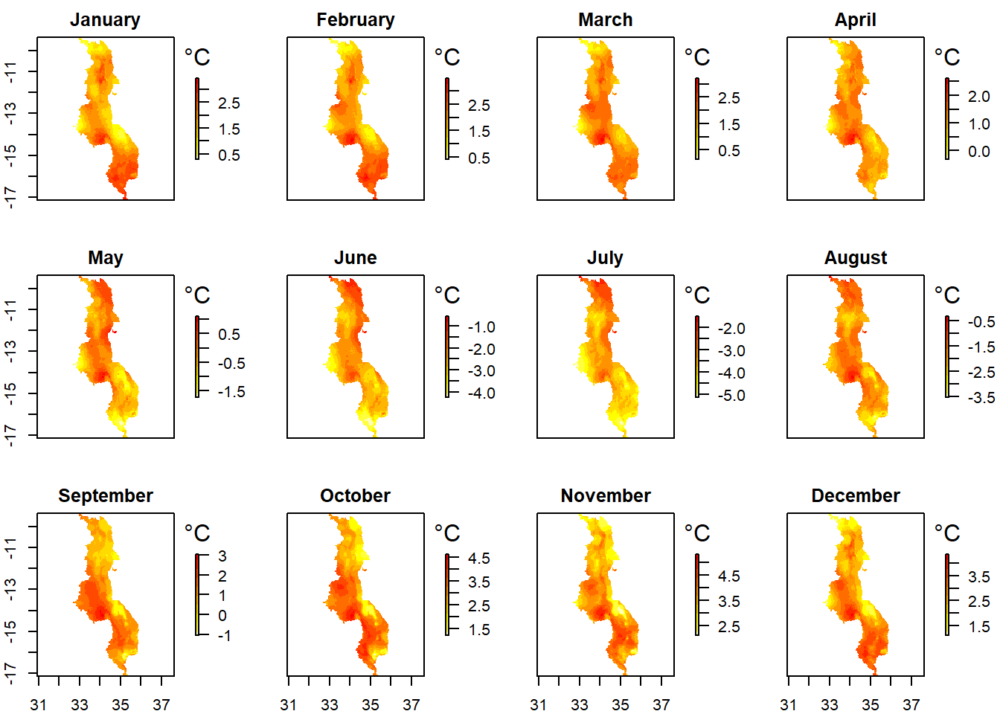
Northern Malawi
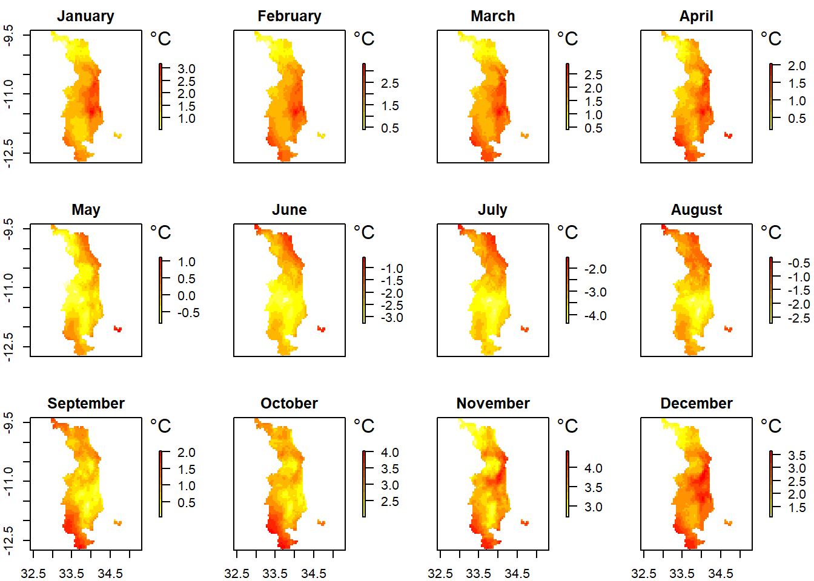
Central Malawi
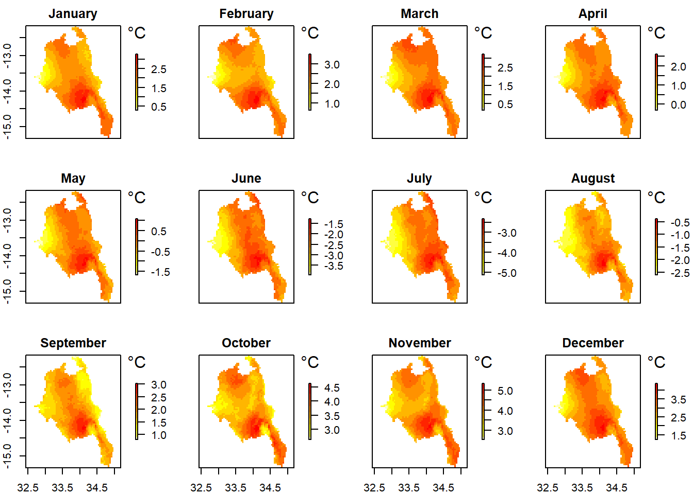
Southern Malawi
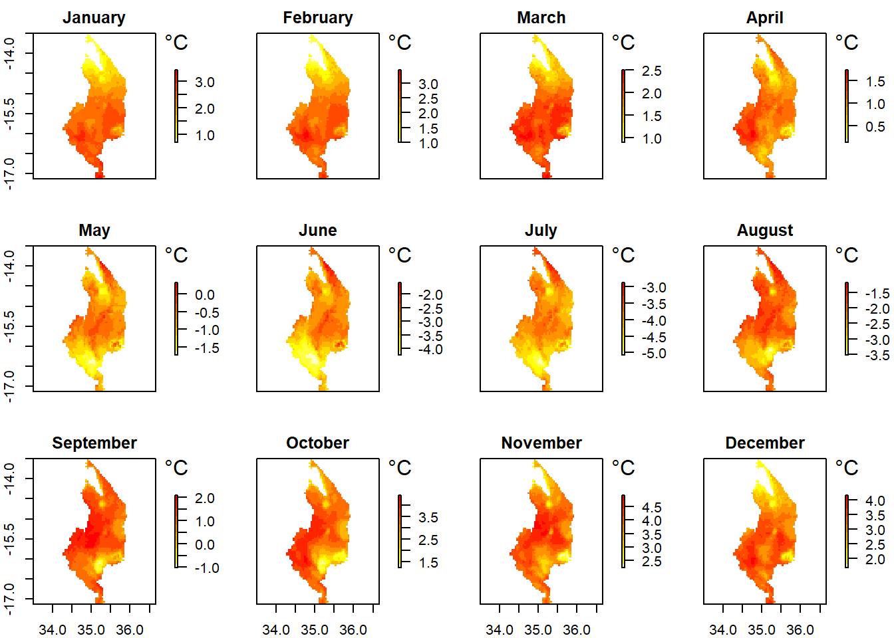
Precipitation change 2021-2040 based on climatologial period 1971-2000
Scenario: SSP5 - Fossil-fueled Development
National
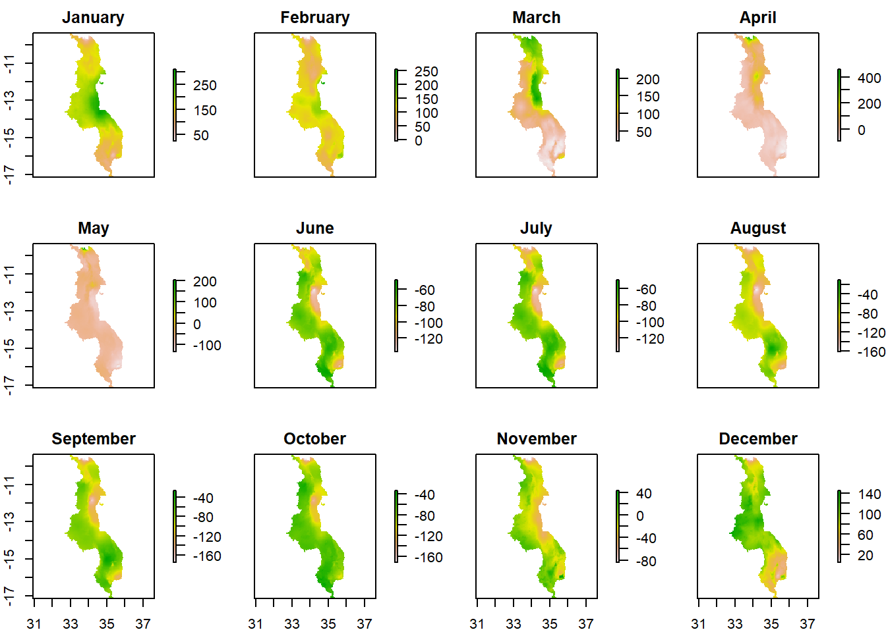
Northern Malawi
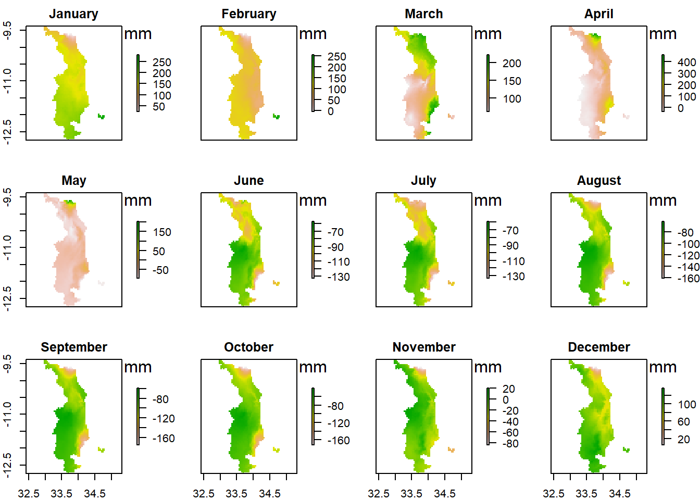
Central Malawi
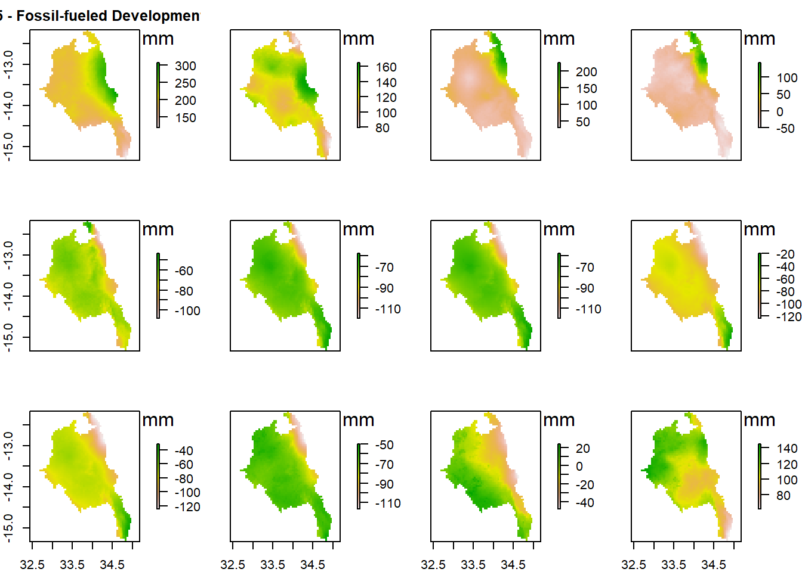
Southern Malawi
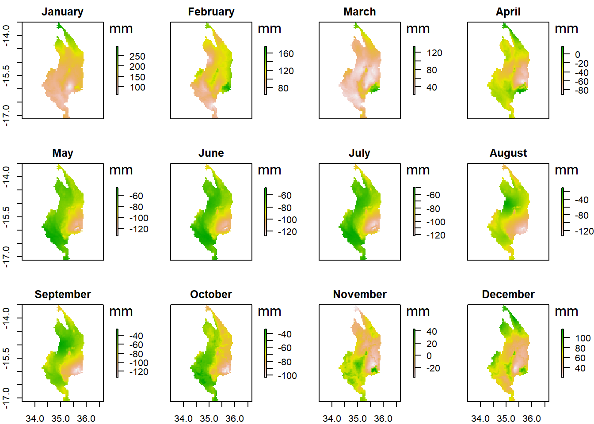
Figure 8: Time series of mean annual temperature (°C) for 34 CMIP models (Source: UMFULA. 2017. Malawi Country Climate Brief: Future Climate Change Projections for Malawi). Note: CMIP = Climate Model Intercomparison Project
Rain-fed agriculture contributes 90 % of Malawi’s food production. However, the incidence of extreme droughts and floods and extreme heat events is expected to increase (Hughes et al., 2019a). According to Cacho et al., (2020), crop yields are expected to be below the no climate change reference scenario for most crops by 2050, with average yields as low as 0.83 compared to 2010 Table 6. For the period 2020-2050, climate change’s total cost to smallholders is $1.6 (± 1.3) billion in present-value terms (Cacho et al., 2020).
Table 6: Relative yield projections in 2050 for main crops grown by smallholders in Malawi expressed as the ration of yields under each RCP to yields under no climate change reference scenario with CO2 fertilizer (± SD)
Figure 9: Average changes in the Lilongwe District’s mid-and late century maize yields(%).Compared to the baseline period (1971-2000), the average maize yield reduction ranges for the 2050s and 2090s are 7%-14% and 13% -33%, respectively.Source: Msowoya et al., 2016
Climate change impacts on infrastructure have been projected to reduce the growth rate of Malawi’s GDP. Based on a comprehensive analysis using median climate scenarios directly related to changes in temperature and precipitation up to 2050, it has been estimated that, without adaptation measures to the planning, construction and maintenance of ad infrastructure, Malawi faces a potential annual average total cost of USD 165 million. The capacity installed and electricity generated at the hydropower plants in Malawi account for 80.2% and 98%, respectively, of the country’s total electricity power (Mtilatila et al., 2020). Reduction in annual hydropower production between 1% (RCP8.5) and 2.5% (RCP4.5) during 2021–2050 and between 5% (RCP4.5) and 24% (RCP8.5) during 2071–2100 has also been projected (Mtilatila et al., 2020).
Hazard | Northern Malawi | Central and Southern Malawi | Country-level projections |
Temperature | Extreme temperature increase | Temperatures are projected to increase from the 1971–2000 baseline by between 1.4 and 1.6 °C by 2035 and 1.9 and 2.5 °C by 2055 under Representative Concentration Pathways (RCPs) 4.5 and 8.5 respectively, | · A clear warming trend is apparent in annual temperature throughout the country
|
Total Monthly Rainfall | · Drying is pronounced in all the seasons in northern Malawi.
| · Precipitation projections are more uncertain
| · There is a lot of variability in rainfall amounts and seasonality
|
Drought | Below normal crop yields between 2045-2090 | · Increased hunger and food insecurity
| · More severe droughts expected between with approximated GDP declines of 21.53% in agricultural sector driven largely by the large fall in maize production
|
Floods | Increased frequency of flood events | In southern Malawi, the following are expected:
| · Flash floods projected to increase throughout Malawi
|
6.3 Assessment by key systems
There are a number of key systems in Malawi (Table 8 and Figure 13) below on Malawi Systems. Each of these are addressed below and interlinkages between them are explored. Local and national economic development in Malawi depends on livelihoods from natural resources and food security. Systems that provide for livelihoods are vulnerable to the impacts of climate change and overexploitation due to growing demand from rapid population growth. The NAP has been designed to capture the need to adapt in the critical subsystems of food production including crop, livestock, fisheries, and water resources. The food production system is strategically linked with economic value chains as broader market interventions at the macro level. The fisheries subsystem is complements with crop and livestock in livelihoods - as a source of income as well as a source of nutrition. Water resources support both agriculture (crop and livestock) and fisheries and has strong linkages across productivity and adaptation needs. Other systems under consideration include health, the hydropower, the sewage and waste, urban planning and development, and transport (Table 8).
Identified Systems | Key System Stressors/Weaknesses | Key Interacting/Nexus Systems | Development Goal | Related SDGs | Sendai Framework (Annex III) |
(MGDS III) | |||||
Crop production | Rising temperatures | Water resources and supply | KPA1: Outcome – Inclusive agricultural transformation adaptive to climate change | SDG1-No Poverty [1.1, 1.2, 1.4] | Developing, testing or introducing practices or techniques that are more resilient to disasters and climate variability in farming systems or plant breeding. |
Increased intensity and frequency of heavy rainfall | Livestock production | KPA2: Outcome – Improved and accessible quality and relevant education and skills for all | SDG2-Zero Hunger [2.1, 2.2, 2.3, 2.4, 2.5, 2.a, 2.c] | Development of irrigation or drainage networks to reduce vulnerability to disasters. | |
Increased frequency of droughts and length of dry spells. | Marketing and Transport | KPA4: Outcome – Enhanced equitable access to social and economic services, local and international markets through safe, reliable and affordable transport and ICT infrastructure | SDG3-Good Health and Well-Being [3.8, 3.9] | Developing or introducing strategies to intensify crop production to mitigate rising food prices that result from drought. | |
High costs of inputs | Forests | KPA5: Outcome – Improved health, nutrition status and population management and development | |||
Low adoption of agriculture technologies. | Fisheries | ||||
Limited access to efficient markets. | Ecosystems and biodiversity | ||||
Limited irrigation systems. | Energy | ||||
Poor land management practices. | Health | ||||
Social-cultural | |||||
Governance | |||||
Livestock production | Limited pasture due to human population pressure | Water resources and supply | KPA1: Outcome – Inclusive agricultural transformation adaptive to climate change | SDG1-No Poverty [1.1, 1.2, 1.4] | Integration of disaster resilience into extension services and programmes. |
Inadequate storage and breeding technologies in feed and breeding programs – unavailability of artificial insemination services | Rangelands | KPA2: Outcome – Improved and accessible quality and relevant education and skills for all | SDG2-Zero Hunger [2.1, 2.2, 2.3, 2.4, 2.5, 2.a, 2.c] | Introducing or strengthening soil management practices to adapt to climate hazards. | |
Insufficient health support infrastructure and services such as dip tanks. | Crop production | KPA4: Outcome – Enhanced equitable access to social and economic services, local and international markets through safe, reliable and affordable transport and ICT infrastructure | SDG3-Good Health and Well-Being [3.8, 3.9] | ||
Increasing temperatures | Market and transport | KPA5: Outcome – Improved health, nutrition status and population management and development | |||
Diseases and high cost of drugs | Health | ||||
Low milk prices | Ecosystems and biodiversity | ||||
Poor markets for milk | Social cultural | ||||
Land degradation | Governance | ||||
Energy | |||||
Agriculture Markets and Trade | Over reliance on rainfed agriculture and limited irrigation infrastructure | Crop production | KPA1: Outcome – Inclusive agricultural transformation adaptive to climate change | SDG2-Zero Hunger [2.3, 2.b, 2.c] | Establish a risk management framework integrating natural hazard risk mitigation strategies |
Limited access to inputs and services | Livestock production | KPA3: Outcome – Sustainable energy for spurring socio-economic development | SDG8-Decent Work and Economic Growth [8.a,] | Disaster risk insurance schemes for productive sectors such as agriculture, fishing etc. | |
Low productivity | Water resources | KPA4: Outcome – Enhanced equitable access to social and economic services, local and international markets through safe, reliable and affordable transport and ICT infrastructure | SDG10-Reduced Inequalities [10.5, 10a] | ||
Post-harvest losses | Transport system | KPA5: Outcome – Improved health, nutrition status and population management and development | SDG17-Partnerships for the Goals [17.10, 17.11, 17.12] | ||
Poor or lack of processing and weak marketing strategies | |||||
Inadequate and/or lack of domestic markets | |||||
Poor credit repayment discipline. | |||||
Low prices for some crop produce | |||||
High transportation costs | |||||
Fisheries | Unsustainable fishing practices - Overfishing | Water resources and supply | KPA1: Outcome – Inclusive agricultural transformation adaptive to climate change | SDG1-No Poverty [1.1, 1.2, 1.4] | Fishing sector policy, planning and programmes, and institution of capacity building integrating DRR. |
Increased surface water temperatures. | Ecosystems and biodiversity | KPA4: Outcome – Enhanced equitable access to social and economic services, local and international markets through safe, reliable and affordable transport and ICT infrastructure | SDG2-Zero Hunger [2.1, 2.2, 2.3, 2.4, 2.5, 2.a, 2.c] | ||
Increased frequency and intensity of heavy rainfall events. | Forests | KPA5: Outcome – Improved health, nutrition status and population management and development | SDG3-Good Health and Well-Being [3.8, 3.9] | ||
Increased drought conditions | Crop production | ||||
Market and trade | |||||
Health | |||||
Social cultural | |||||
Forestry | High human population growth – increased biomass energy demands | Water resources and supply | KPA2: Outcome – Improved and accessible quality and relevant education and skills for all | SDG15-Life on Land [15.1, 15.2, 15.7, 15a, 15b, 15c] | Introducing the use of forest systems to reduce vulnerability to landslides, flooding or other natural hazards. |
Agriculture expansion. | Crop production | KPA3: Outcome – Sustainable energy for spurring socio-economic development | SDG6-Clean Water and Sanitation [6.6] | Reforestation and afforestation with species less vulnerable to climate variability and natural hazards. | |
Tobacco farming – which requires significant number of trees for curing | Livestock production | Forest fire prevention measures. | |||
Brick burning | Health | Forestry sector policy, planning and programmes, and institution of capacity building integrating DRR. | |||
Urbanization | Social cultural | ||||
Inadequate funding | Energy | ||||
Poor law enforcement - corruption | Market and trade | ||||
Water Resources | Deforestation in catchment areas. | Crop production | KPA1: Outcome – Inclusive agricultural transformation adaptive to climate change | SDG6-Clean Water and Sanitation [6.1, 6.2, 6.3, 6.4, 6.5, 6.6, 6.a ,6.b] | Reducing the vulnerability of public drinking water supply and distribution systems. |
Rising temperatures. | Livestock production | SDG3-Good Health and Well-Being [3.9] | Strengthening of hydrometeorology capacity and early warning systems. | ||
Increased intensity and frequency. | Energy | SDG15-Life on Land [15.1, 15.8] | Reducing the vulnerability to natural hazards of wastewater treatment and disposal designs. | ||
Increased drought conditions and dry spell length. | Health | KPA3: Outcome – Sustainable energy for spurring socio-economic development | Integration of DRR measures in river basin’s development and management. | ||
Tourism | KPA4: Outcome – Enhanced equitable access to social and economic services, local and international markets through safe, reliable and affordable transport and ICT infrastructure | ||||
Fisheries | |||||
Forests | |||||
Ecosystem and Biodiversity | |||||
Rural water supply | Inadequate human resources to ensure an adequate and sustainable water supply. | Crop production | KPA1: Outcome – Inclusive agricultural transformation adaptive to climate change | SDG6-Clean Water and Sanitation [6.1, 6.2, 6.3, 6.4, 6.6, 6.b] | Reducing the vulnerability of public drinking water supply and distribution systems. |
Cultivation along riverbanks and streams threatens the quality of water supplied to rural households and communities. | Livestock production | KPA4: Outcome – Enhanced equitable access to social and economic services, local and international markets through safe, reliable and affordable transport and ICT infrastructure | SDG1-No Poverty [1.4] | Multi-sector aid for basic social services (including basic education, basic health, basic nutrition, population/reproductive health and basic drinking water supply and basic sanitation) that integrate DRR. | |
Land cover changes due to deforestation causes drying up of some streams and rivers. | Forests | KPA5: Outcome – Improved health, nutrition status and population management and development | SDG3-Good Health and Well-Being [3.9] | ||
Droughts | Ecosystem and Biodiversity | SDG11-Sustainable Cities and Communities [11.1] | |||
Increased use of agro-chemicals. | Social Cultural | ||||
Urban water supply system – Lilongwe City | Rapid human population growth. | Crop production | KPA1: Outcome – Inclusive agricultural transformation adaptive to climate change | SDG6-Clean Water and Sanitation [6.1, 6.2, 6.3, 6.a, 6.b] | Reducing the vulnerability of public drinking water supply and distribution systems. |
High rates of urbanization | Livestock production | KPA3: Outcome – Sustainable energy for spurring socio-economic development | SDG11-Sustainable Cities and Communities [11.1] | Multi-sector aid for basic social services (including basic education, basic health, basic nutrition, population/reproductive health and basic drinking water supply and basic sanitation) that integrate DRR. | |
The increased emergence of low-income areas and informal settlements – make it difficult for Lilongwe Water Board (LWB) to improve water on water service coverage. | Forests | KPA4: Outcome – Enhanced equitable access to social and economic services, local and international markets through safe, reliable and affordable transport and ICT infrastructure | |||
Deforestation of the Lilongwe River catchment. | Ecosystem and Biodiversity | KPA5: Outcome – Improved health, nutrition status and population management and development | |||
Inadequate infrastructure | Social Cultural | ||||
Urban water supply system – Mzuzu City | Rapid human population growth – High demand for water | Crop production | KPA3: Outcome – Sustainable energy for spurring socio-economic development | SDG6-Clean Water and Sanitation [6.1, 6.2, 6.3, 6.a, 6.b] | Reducing the vulnerability of public drinking water supply and distribution systems. |
Inadequate storage capacity of the Lunyangwa dam | Livestock production | KPA4: Outcome – Enhanced equitable access to social and economic services, local and international markets through safe, reliable and affordable transport and ICT infrastructure | SDG11-Sustainable Cities and Communities [11.1] | Multi-sector aid for basic social services (including basic education, basic health, basic nutrition, population/reproductive health and basic drinking water supply and basic sanitation) that integrate DRR. | |
Over-reliance on loans for expansion of services – results in loss of revenue. | Forests | KPA5: Outcome – Improved health, nutrition status and population management and development | |||
Interrupted power supply – which causes machines to fail to pump water at times. | Ecosystem and Biodiversity | ||||
Social Cultural | |||||
Urban water supply system – Blantyre City | Poor governance/management practices – lack or low incentives to workers. | Crop production | KPA3: Outcome – Sustainable energy for spurring socio-economic development | SDG6-Clean Water and Sanitation [6.1, 6.2, 6.3, 6.a, 6.b] | Reducing the vulnerability of public drinking water supply and distribution systems. |
Low tariffs collection – due to illegal connections, and vandalism | Livestock production | KPA4: Outcome – Enhanced equitable access to social and economic services, local and international markets through safe, reliable and affordable transport and ICT infrastructure | SDG11-Sustainable Cities and Communities [11.1] | Multi-sector aid for basic social services (including basic education, basic health, basic nutrition, population/reproductive health and basic drinking water supply and basic sanitation) that integrate DRR. | |
Rapid rates of urbanization | Forests | KPA5: Outcome – Improved health, nutrition status and population management and development | |||
Inadequate finances to expand the water supply system. | Ecosystem and Biodiversity | ||||
Power outages | Social Cultural | ||||
Droughts and low rainfall | |||||
Energy – Hydroelectricity generation system | Encroachment of hydro- power dams for sand winning – Affect stability of dams. | Water resources | KPA1: Outcome – Inclusive agricultural transformation adaptive to climate change | SDG7-Affordable and Clean Energy [7.1, 7.2, 7.3, 7a, 7b] | Incorporation of the potential impacts of disasters in the design standards of generation, transmission and distribution lines and power system reliability assessments. |
Low water levels due to inadequate and/or erratic rainfall. | Ecosystem and Biodiversity | KPA2: Outcome – Improved and accessible quality and relevant education and skills for all | SDG 15- Life on Land [15.1] | Integration of DRR considerations in energy sector planning and institution capacity building. | |
High maintenance costs. | Market and Trade | KPA3: Outcome – Sustainable energy for spurring socio-economic development | SDG6-Clean Water and Sanitation [6.6] | Supporting the increased production of climate smart sources of energy. | |
Operational losses due to power theft or informal power connections | KPA4: Outcome – Enhanced equitable access to social and economic services, local and international markets through safe, reliable and affordable transport and ICT infrastructure | SDG8-Decent Work and Economic Growth[8.1, 8.2, 8.3] | |||
Energy – Electricity distribution infrastructure | Low distribution capacity. | Market and Trade | KPA2: Outcome – Improved and accessible quality and relevant education and skills for all | SDG7-Affordable and Clean Energy [7.1, 7.2, 7.3, 7a, 7b] | Incorporation of the potential impacts of disasters in the design standards of generation, transmission and distribution lines and power system reliability assessments. |
Poor transmission infrastructure | Transport | KPA3: Outcome – Sustainable energy for spurring socio-economic development | SDG 15- Life on Land [15.1] | Integration of DRR considerations in energy sector planning and institution capacity building. | |
Wildfire burning high transmission poles in forests | Governance | KPA4: Outcome – Enhanced equitable access to social and economic services, local and international markets through safe, reliable and affordable transport and ICT infrastructure | SDG6-Clean Water and Sanitation [6.6] | Supporting the increased production of climate smart sources of energy. | |
Windstorms pulling down transmission lines | Forests | SDG8-Decent Work and Economic Growth[8.1, 8.2, 8.3] | |||
Bushfires causing explosion of transformers. | |||||
Increasing air temperatures affecting carrying capacity and transmission potential. | |||||
Urban waste management system - Landfills | Poor public attitude towards waste disposal. | Health | KPA1: Outcome – Inclusive agricultural transformation adaptive to climate change | SDG11-Sustainable Cities and Communities [11.6] | Preventive measures to counteract increased exposure to diseases related to disasters. |
High rates of urbanization which have increased demand for landfills. | Water resources and supply | KPA3: Outcome – Sustainable energy for spurring socio-economic development | SDG12-Responsible Consumption and Production [12.3, 12.4, 12.5] | ||
Lack of proper waste management plans. | Crop production | KPA4: Outcome – Enhanced equitable access to social and economic services, local and international markets through safe, reliable and affordable transport and ICT infrastructure | SDG3-Good Health and Well-Being [3.9] | ||
Low frequency of waste collection by the city assembly due to limited number of vehicles. | Livestock production | SDG6-Clean Water and Sanitation [6.2, 6.3] | |||
Lack of machinery for digging trenches and compacting waste in landfills. | Social cultural | ||||
Poor effluent discharge into rivers. | |||||
Agriculture chemicals | |||||
Heavy rains and /or floods which washes waste from an around landfills into river systems | |||||
Medical waste management | Rapid human population growth which has increased amount of waste generated. | Health | KPA1: Outcome – Inclusive agricultural transformation adaptive to climate change | SDG3-Good Health and Well-Being [3.9] | Incorporating disaster-related health risks into clinical practice guidelines, and curricula for continuous medical education and training. |
High maintenance cost for medical waste disposal systems. | Water resources and supply | Preventive measures to counteract increased exposure to diseases related to disasters. | |||
Expansion of health facilities has resulted in high-cost biological waste disposal | KPA3: Outcome – Sustainable energy for spurring socio-economic development | ||||
KPA4: Outcome – Enhanced equitable access to social and economic services, local and international markets through safe, reliable and affordable transport and ICT infrastructure | |||||
KPA5: Outcome – Improved health, nutrition status and population management and development | |||||
Sewage waste management systems | Generation of high amounts of sewage beyond the capacity of treatment plants – due to high human population growth. | Health | KPA1: Outcome – Inclusive agricultural transformation adaptive to climate change | SDG3-Good Health and Well-Being [3.9] | Preventive measures to counteract increased exposure to diseases related to disasters. |
Heavy rains which flood sewer reservoirs. | Water resources and supply | KPA4: Outcome – Enhanced equitable access to social and economic services, local and international markets through safe, reliable and affordable transport and ICT infrastructure | SDG6- Clean Water and Sanitation [6.2, 6.3] | Reducing the vulnerability to natural hazards of wastewater treatment and disposal designs. | |
Rapid expansion of urban settlements | Crop production | KPA5: Outcome – Improved health, nutrition status and population management and development | SDG11-Sustainable Cities and Communities[11.3, 11.6] | ||
Livestock production | |||||
Social cultural | |||||
Transport system | Inadequate road networks | Water resources and supply. | KPA1: Outcome – Inclusive agricultural transformation adaptive to climate change | SDG7-Affordable and Clean Energy [7a,7b] | Embedding disaster-resilient elements in the existing transportation network. |
Inadequate freight and rail capacity | Energy | KPA4: Outcome – Enhanced equitable access to social and economic services, local and international markets through safe, reliable and affordable transport and ICT infrastructure | SDG9-Industry, Innovation and Infrastructure [9.1, 9a] | Assessing economic, environmental, or social impacts of natural hazards on transportation, as well as disaster risk impacts of new transport and infrastructure investments. | |
Inadequate financial resources | Markets and Trade | SDG11-Sustainable Cities and Communities [11.2] | Introducing disaster resilient building codes in road construction projects. | ||
Delayed maintenance of various roads | SDG3-Good Health [3.6] | ||||
Heavy rains – which cause floods or increased runoff which degrade roads | |||||
Poor road surface conditions | |||||
Weak enforcement of town planning regulations. | |||||
Riverbank flood planning | Extensive deforestation | Water resources | KPA1: Outcome – Inclusive agricultural transformation adaptive to climate change | SDG15-Life on Land [15.2, 15.3] | Development of flood prevention / control measures: floods from rivers or the sea; including sea water intrusion control and sea level rise related activities. |
Heavy rainfall | Energy | KPA4: Outcome – Enhanced equitable access to social and economic services, local and international markets through safe, reliable and affordable transport and ICT infrastructure | Construction of evacuation shelters for communities to use in times of natural disasters. | ||
High poverty levels | Agriculture | KPA5: Outcome – Improved health, nutrition status and population management and development | Development of disaster helplines | ||
Limited funding | Health | ||||
Limited community participation | |||||
Over-reliance on aid and lack of ownership by local communities of flood management projects | |||||
Increased settlements in flood prone areas | |||||
Lack of flood protection infrastructure | |||||
Urban flood planning | Poor drainage systems | Water resources | KPA1: Outcome – Inclusive agricultural transformation adaptive to climate change | SDG11-Sustainable Cities and Communities [11.5, 11.a, 11.b] | Construction of evacuation shelters for communities to use in times of natural disasters. |
High human population density – difficult to install or modify drainage systems | Energy | KPA3: Outcome – Sustainable energy for spurring socio-economic development | Development of disaster helplines. | ||
Lack or untimely maintenance of drainage systems | Agriculture | Development of flood prevention / control measures: floods from rivers or the sea; including sea water intrusion control and sea level rise related activities. | |||
Informal settlements | Health | KPA5: Outcome – Improved health, nutrition status and population management and development | |||
Ecosystems | Land use/cover change due to deforestation | Forests | KPA1: Outcome – Inclusive agricultural transformation adaptive to climate change | SDG15-Life on Land [15.1, 15.2, 15.3, 15.4, 15.5, 15.6, 15.7, 15.8, 15.9, 15.a, 15.b, 15.c] | Reforestation and afforestation with species less vulnerable to climate variability and natural hazards. |
Rising temperature | Water resources and supply | KPA3: Outcome – Sustainable energy for spurring socio-economic development | |||
Erratic rainfall | Crop production | KPA4: Outcome – Enhanced equitable access to social and economic services, local and international markets through safe, reliable and affordable transport and ICT infrastructure | |||
Increased drought conditions | Livestock production | KPA5: Outcome – Improved health, nutrition status and population management and development | |||
Crop production | |||||
Market and Trade | |||||
Health | |||||
Social cultural | |||||
Tourism | |||||
Energy | |||||
Social-Cultural System | Over-exploitation of natural resource for housing, clothing, medicine, energy, livelihoods | Ecosystems and biodiversity | KPA1: Outcome – Inclusive agricultural transformation adaptive to climate change | SDG8-Decent Work and Economic Growth [8.5, 8.6, 8.7] | Specific targeting of groups vulnerable to natural hazards for social protection programmes. |
Socio-cultural importance of livestock ownership | Forestry | KPA2: Outcome – Improved and accessible quality and relevant education and skills for all | SDG5-Gender Equality [5.1, 5.2, 5.3] | Development of social protection strategies / safety nets to respond to natural disasters. | |
Chronic poverty | Crop production | KPA3: Outcome – Sustainable energy for spurring socio-economic development | SDG11-Sustainable Cities and Communities [11.4] | ||
Low adaptive capacities | Livestock production | KPA4: Outcome – Enhanced equitable access to social and economic services, local and international markets through safe, reliable and affordable transport and ICT infrastructure | |||
Fisheries | KPA5: Outcome – Improved health, nutrition status and population management and development | ||||
Rangelands | |||||
Water resources and supply | |||||
Energy | |||||
Tourism | |||||
Cities and human settlements | |||||
Health | |||||
Health | Rising temperature | Crop production | KPA1: Outcome – Inclusive agricultural transformation adaptive to climate change | SDG3-Good Health and Well Being [3.1, 3.2, 3.3, 3.4, 3.5, 3.6, 3.7, 3.8, 3.9, 3.a, 3.b, 3.c, 3.d] | Training of health care providers in disaster preparedness and response. |
Increased heavy rainfall events – cause floods | Livestock production | KPA4: Outcome – Enhanced equitable access to social and economic services, local and international markets through safe, reliable and affordable transport and ICT infrastructure | SDG2- Zero Hunger [2.2] | Retrofitting existing health infrastructure such as health centres and hospitals with disaster resilient building codes. | |
Increased drought conditions | Ecosystems | KPA5: Outcome – Improved health, nutrition status and population management and development | Assessing changes in risk (exposure and sensitivity to disaster-related diseases, including in respect of vulnerable groups and post-disaster incidence. | ||
Increased human population | Water resources and supply | Incorporating disaster-related health risks into clinical practice guidelines, and curricula for continuous medical education and training. | |||
Low number of health workers | Forests | Preventive measures to counteract increased exposure to diseases related to disasters. | |||
Strengthening health management information systems related to disaster risk management. | |||||
Strategies that aim to improve the disaster risk management of the health and insurance system. Including disaster related diseases in basic benefits of insurance policies. |
6.3.1 Food Production Megasystem
The Food Production System in Malawi is complex – highly fragmented and dependent on many small-scale producers who are often non-market oriented and vulnerable to climate change. This is on a background of many environmental risks that impose limits to systems productivity. A recent report on the Malawi’s Agri-food System (White, 2019) demonstrates the country’s agri-food system’s complexity in two fundamental ways (i) the country’s agri-food system comprises 80% of the population of about 18.1 million people consisting of smallholder farmers and many who work as food retailers, transporters, and small-scale processors. (ii) the country’s food production system operates in a complex policy debate about the role of subsidies such as the Farm Input Subsidy Program (FISP) against priorities for Greenhouse Gas (GHG) mitigation. For the purpose of the National Adaptation Plan (NAP), this section limits description of the country’s food production system within the scope of crop, livestock and the fisheries and aquaculture subsystems from climate change adaptation context.
The performance of agri-food system in Malawi is vulnerable to a high degree of uncertainty and volatility compounded with limited adaptive capacities, especially among smallholder farmers. This is because, the country’s agri-food system relies on rainfed annual agriculture production thriving in highly variable climate, compounded with the fall armyworm (Spodoptera frugiperda). Many people, both urban and rural are perpetually vulnerable to an annual hungry season when the previous year’s harvest has been poor. Trends have shown that, malnutrition was steadily declining from a high of 26.3% in 1998, down to 12.1% in 2009, back up to 16.7% in 2014, with undernourishment in 2015 staggering at 20.7% and declines remained slow in recent years.
The volatility and precarity of the agri-food system is exacerbated by the combined impacts of poor infrastructure, uneven and deteriorating power access, expensive fuel, and poverty. Across the region, climate change is yet, expected to have widely variable impacts that generally exacerbate variability and extremes. The future impacts of the agri-food system can be reflected in the response of other subsystems such as energy and infrastructures (Tables 7 and Table 8).
Sector | Observed climate impacts | Global impact rating | National impact rating | Confidence rating | Data quality rating | Time period |
AGRICULTURE | Reduced crop yield associated with heat and drought stress. | Low-High | Low- High | High | Low | 1992-2017 |
Crops | Changes in crop suitability due to shifts in agroecological zones. | Medium-High | Medium-High | Medium- High | Low | 1992-2017 |
Economic losses due to severe reductions in crop yields caused | ||||||
by frequent floods and droughts. | ||||||
Livestock | Increased animal mortality associated with intense heat, frequent droughts and floods. | Low- Medium | Low-Medium | Low | Low | 1992-2017 |
Sector | Projected climate impacts | Impact rating | Confidence rating | Data quality rating | Time period |
Agriculture | Declining yield among all types of crops in all parts of the country except in the northern region. | Medium | Low-Medium | Medium | 2007-2050 |
Energy | Hydropower production negatively affected by high rainfall variability. | Medium | Medium | Low | 2007-2050 |
Built Infrastructure | Increased damage to infrastructure and human settlement due to intense flooding. | High | High | Low | 1992-2050 |
Source: CLICC Phase 2 Project (2019).
6.3.1.1 Crop Production Subsystem
Approximately, 90% percent of the crops are rainfed, and most farmers cultivate on small parcels of land of approximately 0.5 to 1.5 ha, although Lea & Hanmer (2009) note that many farmers in some parts of the country leave portions of their plots fallow, which is partially due to labour constraints (Bezner-Kerr & Patel, 2014). It is estimated that 11% of farmers are landless and only 13% of households cultivate on more than 2ha (Mangelsdorf, Hoppe, Kirk, & Dihel, 2014). Household land farms vary across the country – larger in the northern region than further south due to lower population density. Maize occupies at least 60% of cultivated land and is farmed by 97% of farming households. It makes up 60-70% of total food intake and 48% of protein consumption (Kampanje-Phiri, 2016). Average maize yields in Malawi are around 1.2 MT/ha, which is lower than the average for Africa, 1.8 MT/ha, also considered far below the average potential (Abate et al., 2017; Mango et al., 2018).
Total cultivatable land is not fully explored in Malawi. Currently total land cultivated is about 2.5 million hectares (Agriculture policy) but total suitable area for agriculture is about 4.7 million hectares. The cash crops like, tobacco, tea, sugarcane, and macadamia are cultivated in estate subsector. The estate subsector also provides contract farming opportunities for smallholder farmers. Out of the cultivated land 90% is under rain fed agriculture despite that there are 407, 862 hectares of land that have the potential for irrigation farming. Out of the 400,000 hectares of land suitable for irrigation, only 14,000 hectares are under smallholder farmer irrigation while 48,000 hectares are under estate irrigation. This indicates a huge gap that can be addressed through investment.
With quantitative data available for eight soil and terrain factors, a recent study (Li et al., 2017) has indicated that highly suitable, moderately suitable, marginally suitable, and unsuitable agricultural areas account for 8.2%, 24.1%, 28.0%, and 39.7% of the total land area, respectively. The majority of suitable lands are currently used for agriculture, but more than half (57.4%) of Malawi’s total cropland exists on marginally suitable or unsuitable land categories and is likely a candidate for rehabilitation through sustainable agricultural practices, if the crop production subsystem is to adapt to climate change.
Over the years the government has implemented agricultural input programs to improve agriculture production in the country amidst of the challenges. Most of these input programs have focused on Maize production the staple food. The main aim of these programs has been to improve the productivity of the smallholder maize farms so as to ensure food security. Since the early seventy’s the government has implemented six agricultural input programs which include:
- Agricultural Input Subsidy Programme: – subsidized seed and fertilizer for smallholder farmers (1970-1995)
- Supplementary Input Programme: – Input kit distribution to vulnerable households (1995-1997).
- Starter Pack Programme: – Universal distribution of fertilizer and seed (1998-99).
- Targeted Input Programme: – Targeted fertilizer and seed distribution (2000-04).
- The 2005 Extended Target Input Programme: – Expanded targeted fertilizer and seed distribution.
- Farm Input Subsidy Programme: – Targeted voucher based maize seed and fertilizer subsidies (2006 to present).
The main aim of these programs has been to improve the productivity of the smallholder maize farms so as to ensure food security. However, some of these programs did not achieve the intended goals hence they were phased out. For instance, despite having the Targeted input programme (2000-04) and the 2005 extended target input programme the country still experienced severe food crises in 2002 and 2005. Currently, the Farm Input Subsidy Programme (FISP) is being implemented where smallholder famers are provided with coupons which allow them to purchase hybrid maize seed and fertilizers at relatively low prices. The FISP programme has positive impacts on maize production and net crop income but limited impact on food consumption and household income (references). Furthermore, weaknesses of the programme have been pointed out including its financial sustainability and identification of beneficiaries (IFPRI, 2013), as there is high support to the middle income than the poorest.
The constraints to expanding irrigation for agricultural production have been:
- Focusing of the agricultural economy on rainfed agriculture and existing irrigation schemes, where emphasis was on funding extension activities.
- Reluctance of donors to fund irrigation development.
- Replacement of irrigation services under the Ministry of Agriculture, which has focused on rainfed agriculture.
- Price setting for crops not viable for irrigation.
- Almost no irrigation technology training facilities within the country.
- A poorly funded and understaffed Department of Irrigation.
6.3.1.2 Livestock Production Subsystem
The livestock industry in Malawi is underdeveloped and contributes only 8% of total GDP and about 36% the value of total agricultural products. Both smallholders and estate farmers are involved in livestock production, but due to various production bottlenecks, intensive livestock production systems are largely dominated by estate farms. Despite that, livestock provides food, income, manure, animal traction and social security to some smallholder farmers. Considering all this, livestock may account more than 11% to Gross Domestic Production. Major livestock production comprises beef, dairy, goat, sheep, pigs, chicken and eggs, with registered small increases in recent years. Population of cattle has been increasing by 3% annually. In 2014 there were over 1.3 million cattle and over 6.3 million goats in the country. Livestock production experiences varying challenges including: (i) limited pasture due to human population pressure (ii) inadequate production and storage technologies in feed and breeding programmes (iii) Insufficient health support infrastructure and services such as dip tanks.
Spatial coverage of floods responsible for economic losses are generally localized in watershed areas. This limited coverage creates localized impacts such as crop and soil losses; hence the rating is medium. However, the impacts are felt on the national economy hence the rating is high. For example, on average, Malawi loses USD9 million or 0.7% of the GDP each year due to floods in the southern region of the country. Taken together, drought and floods cost the Malawian economy about 1.7% of its GDP every year. This is equivalent to almost US$22 million.
Available literature agrees on the devastating impacts of frequent and severe floods and droughts on the agriculture sector in Malawi. The sector suffers the greatest losses, effecting declines in GDP ranging from 1.1 to 21.5% during Return Period of 5 years (RP5) and Return period of 25 years (RP25) for droughts, respectively. Furthermore, the literature and experts agree that low agriculture productivity resulting from climate change result in food shortages, cause domestic grain prices to rise while grain imports increase rapidly to cover the shortfall. Maize imports, for example, increase by between 6 and 256% during RP5 and RP25 droughts, respectively. The possibility for high rating of the impacts implies that spatial coverage is at times wide, and frequency of the impact increases to high. For example, maize is by far the dominant crop produced in Malawi, occupying more than 70 per cent of available agricultural land and is critically important to livelihoods. The average land holding size per household for smallholders in Malawi in the period under consideration was 1.2 hectares. Over 90% of the total agricultural value-added came from about 1.8 million smallholders who on average owned only 1 hectare of land. Flooding in low-lying areas where productivity is inherently high affected almost the whole country in terms of food availability stability and accessibility. The alternation with droughts in the high areas complicates crop productivity. Floods wash away livestock in the low-lying areas.
6.3.1.3 Agriculture Markets and Trade Subsystem
Malawi is an export-led economy and agriculture comprises 80% of exports, with major export crop being tobacco, but sugar, tea, and coffee. The role of tobacco as an export crop is continuously declining. Smallholder rainfed maize production dominates and comprises about 25% of the agricultural GDP, of which agriculture as a whole makes up around 30% of the overall GDP (Pauw, Beck, & Mussa, 2016). At the farm level, net revenue varies widely and may be influenced by multiple factors such as soil conditions, farm size, infrastructure, distance to market, composition of the household, education levels, agro-climatic variability, and other variables.
Transportation of agricultural produce/seeds and agriculture markets constitutes one of the components of the food production system. Agriculture produce is transported differently from the farm to the storage facilities or from the farm to the market depending on distance to be covered and on the financial capacity of the farmer. Among the modes of transport employed are; transportation by foot, bicycle, oxcarts and vehicles. Cereal crops are sold in different ways some are sold to the Malawi government through the Agricultural Development and Marketing Corporation (ADMARC). The ADMARC sells and buys produce from farmers at standardized prices. Other farmers who do not prefer to sell their crop produce to ADMARC usually sell at local markets or sell to vendors who usually move around villages searching for crop produce to buy. For cash crops like tobacco the government has established structures like the Tobacco Control Commission which regulate the sales of tobacco and facilitates exports of the produce.
Sales of livestock and fish are usually done at local markets. For African smallholder farmers to sustain the yield increases they seek, they are reliant on a seed industry. On the other hand, a hybrid-based maize sector also requires large-scale commercial seed enterprises whose profits can be sustained only by strong seasonal demand by farmers for renewing their seed (Haggblade & Hazell, 2010). Leading Seed Companies in Malawi Multinational seed companies carry out seed breeding, production, multiplication, processing, and distribution of mainly hybrid maize. Local seed companies are involved only in seed multiplication and distribution. Malawi’s main seed companies are Seed Co, Monsanto (Bayer), DowDuPont (Pannar), Demeter, and MUSECO.
The Country Vision on Trade.
The Malawi Vision 2063 shows the country’s commitment to have an agricultural development and marketing entity running on commercial principles, promoting the commercialization of agriculture and providing local and international structured market linkages farmers. The parastatals shall operate under a strong alliance with the private sector, in a transparent and accountable manner and independent of political interference.
Malawi is a member of WTO since 1995 and, in recent years has targeted trade-led development through trade expansion instruments, including regional trade agreements. The country also a Member State of the Common Market for Eastern and Southern Africa4 (COMESA) and the Southern African Development Community5 (SADC), with each one accounting for less than a quarter of the country’s trade. Malawi is primarily a resource exporting country and features in the lowest quartile among its regional trade agreement (RTA) partners in terms of GDP per capita – in 2017, the COMESA average was US$2,900 and the SADC average was US$3,720. It is also a Signatory Party to the Protocol on Free Movement of Persons of the Kigali Declaration (2018) and to the 2018 African Continental Free Trade Agreement (AfCFTA).
This active regional trade policy is remarkable and provides several trade-led opportunities for development. However, a variety of challenges and constraints continue to impede trade, such as licensing requirements and a system of trade permits.6 Efforts, such as single window, are underway to simplify border or certification procedures but, overall, there is a great deal of paperwork and specific certification regulation. In addition, standards-related regulations, and implementation, notably Sanitary or Phytosanitary measures (SPS) and other Technical Barriers to Trade (TBT), can also be an impediment to the export of agricultural and agriculture-related products. Malawi also faces several infrastructure-related constraints including poor transport links and lack of access to electricity for a large proportion of the population - only 10 per cent have access - mirroring a trend in many African countries. On the other hand, over half of the population have access to radio and mobile phone services.
Figure 10 displays the value-added breakdown of the Malawian GDP. The significant change in the aggregate economy since 2017 is characterized by a decline in the share of the industrial sector from 29% in 1990 to 15% in 2017 and an increase in the share of the services sector. from 26% in 1990 to 56% in 2017. The former can be explained by the small size of the sector and the relative expansion of world demand for certain basic agricultural products, which has led to a shift towards greater specialization in raw or semi-processed products. The increase in the contribution from services is striking at first, given that the sector’s predominance in generating value -added is generally a phenomenon of developed countries. The most dynamic over the past decade have been construction and sub-sectors such as wholesale and retail trade, real estate, information and communication and financial services. Growth in the services sector is believed to be driven by government expenditure as well as development assistance.3 The share of agriculture as a percentage of GDP has also seen a steady decline from 45% in 1990 to about 28% in 2017.
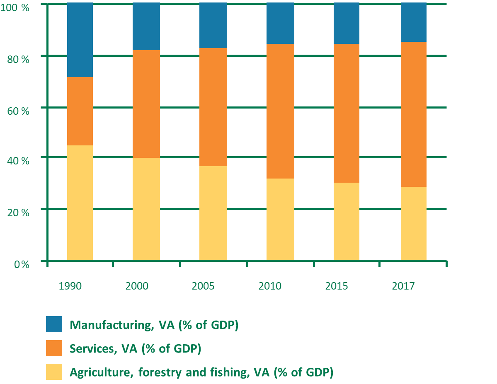 Source: UNCTAD secretariat calculations based on World Bank World Development Indicators data
Figure 11: Food trade calculations for exports and imports between 1995 and 2017. Source: UNCTAD secretariat calculations based on World Bank World Development Indicators data
6.3.1.4 Ecosystems
Ecologically sensitive and fragile ecosystems are facing threats due to poor land use practices and deforestation. Habitat fragmentation and loss threaten biodiversity. Deforestation is leading to the loss of mechanisms for adaptation from the increased impacts of severe flooding and excessive heat waves. Table 11 shows selected ecological systems of special significance in Malawi.
Name | Type | Brief description |
Chongoni Rock Art Area | UNESCO world heritage site | Listed as a world heritage site in 2006. Covers an area of about 126.4km2. Comprises rock art which has paintings by BaTwa hunter-gathers who inhabited the area from the late stone age |
Lake Malawi National Park | UNESCO world heritage site | Became a heritage site in 1984. The only It is considered of global importance for biodiversity conservation due to its fish diversity. |
Mulanje Mountain Biosphere Reserve | UNESCO site | Gazetted as a forest reserve in 1927. Designated as a UNESCO site in 2000. It has rich biodiversity with a high level of endemism. The Mulanje cedar found in this reserve is considered the national tree of Malawi. It is also an Important Bird Area (IBA) |
Lake Chilwa Wetland Biosphere Reserve | UNESCO site | Designated as a UNESCO site in 2006. It is the second largest lake in Malawi and home to one of the most diverse populations of birds |
Nyika National Park | National Park | Nyika National park is one of the important Afro-montane centres of biodiversity. It is included in the global 200 ecoregions which comprises the most outstanding and representative habitats for biodiversity on the planet. |
Vwaza Marsh Wildlife Reserve | Wildlife Reserve | Covers an area of 1000km2 it lies along the Zambia border. It has a rich habitat which attracts a range of birds and has nearly 300 species of birds. It also has a high diversity of smaller mammals. |
Dzalanyama Forest Reserve | Forest Reserve | It was gazette in 1922 with the aim of protecting the forest's ecosystem and Lilongwe's catchment. It is dominated by the miombo woodlands and it is also categorized as an important bird area (IBA). |
Thuma Forest Reserve | Forest Reserve | Gazetted in 1926 and covers 197km2 in the great rift valley escarpment of Lake Malawi. The upper parts of the forest are covered with miombo woodlands while the lower parts are covered with mixed low altitude woodland with patches of bamboo. Thuma is one of a few forest reserves in Malawi which is still home to elephant and buffalo. |
Kasungu National Park | National Park | It is the second largest National park in Malawi and covers an area of 2100km2. Vegetation mostly comprises miombo woodlands and grassy river channels. In recent years it has faced heavy poaching which has reduced the number of animals in this park |
Nkhotakota Wildlife Reserve | Wildlife Reserve | Is the largest and oldest wildlife reserve in Malawi and it covers 1800km2. It experienced high levels of poaching in the past which reduced the number of animals in the park. However, currently it has improved in terms of animal abundance due to the management activities of African Parks |
Liwonde National Park | National Park | Established in 1973 and covers about 548km2. It is home to the Big five. In recent years it has witnessed a huge increase in the number of elephants such that in 2016 over 250 elephants were translocated from Liwonde National Park to Nkhotakota wildlife reserve. It is also home to high variety of bird species; harbouring over 300 bird species. |
Majete Wildlife Reserve | Wildlife Reserve | It is a big five reserve and an important wildlife destination in Malawi. Nearly 5,000 animals of 16 species have been reintroduced including black rhino, elephant, lion, leopard, cheetah, sable antelope, and buffalo. It harbours over 400 elephants |
Lengwe National Park | National Park | It was designated as a national park in 1970. It consists of open deciduous forests and dense thickets. It is home to the Nyala antelope |
The Lake Malawi ecosystem is particularly an area of high freshwater biodiversity that plays a crucial role in the local economy of people living around the lake. It is however also under increasing threat from development, deforestation, hydropower development, oil exploration and multiple other interconnected factors. There is currently a lack of information and awareness of freshwater biodiversity within the region so existing conservation actions fail to recognize its importance and vulnerability.
The country is committed to protection of ecosystems and the services. The national parks, wildlife reserves, and forest reserves cover 18% (1.7 million hectares) of the land mass of Malawi and a substantial proportion of the Shire Valley. Effective protection of these resources will continue to contribute significantly to address the drivers of climate change. Degraded ecosystems need restoration to maintain carbon storage and sequestration, and through best practice land management to combat degradation. Currently, forests are being lost and degraded at alarming rate, driven by a range of factors, including conversion for agriculture, overharvesting of firewood, cutting for charcoal production and increasing frequency of forest fires. Consequently, the country is experiencing unprecedented loss of habitat and their biodiversity. These factors are likely to intensify as population pressures continue to grow. Remnant forests decline in both quality and coverage and as changing climatic factors influence regeneration, forest fire frequency etc. Investing in the sustainable management and conservation of these remaining natural habitats, with strategies and interventions that are informed by climate modelling, offers a potentially cost-effective way of protecting ecosystem services and contributing to resilience. The Government of Malawi has developed a National Biodiversity Strategy and Action Plan to deal with threats to biodiversity including ecosystems.
6.3.1.5 Fisheries System
Malawi is endowed with wild fish resources with fish farming is predominantly based on finfish for both commercial and non-commercial purposes. The fisheries and aquaculture provide essential nutrition, support livelihoods and contribute to national development in Malawi. The aquaculture sector is important to the country’s economic growth and will remain so in many years to come. As the human population grows so too will the demand for animal protein. Fish provides over 70 per cent of the dietary animal protein intake among Malawians and 40 per cent of the total protein supply. Fish also provides vital vitamins, minerals and micronutrient. Much of the fish is consumed in rural areas thereby contributing significantly to daily nutritional requirements to some of the vulnerable groups such as HIV and AIDS victims, orphans and the poor (Economic Report, 2011). Fishing is the main source of livelihood to 37,089 out of 3,984,981 households in Malawi (NSO, 2018). The sector directly employs nearly 59,873 fishers and indirectly over 500,000 people who are involved in fish processing, fish marketing, boat building and engine repair. Furthermore, nearly 1.6 million people in lakeshore communities derive their livelihood from the fishing industry. The main provision of the fishery resource comes from capture fisheries. Sustainable fisheries contributes 3 percent to the national GDP, and government has set a target of 3.8% to be achieved by 2022 in partial fulfilment of MGDS Key Priority Area 1: To achieve sustainable agricultural transformation that is adaptive to Climate Change (GoM, 2017).
Over the past few years, the sector has displayed signs of growth . Total annual production volumes reached an all-time high of 164,940 tonnes in 2016, up from about 81,400 tonnes in 2005 and 100,900 tonnes in 2010. While the bulk of fish caught, sold and consumed has traditionally been produced by capture fishery, capture fishery production has declined in some years. This has been particularly the case for the commercially-oriented, high-value species such as the Oreochromis karongae - locally known as ‘chambo’ – the average annual production of which declined from more than 10,000 tonnes between 1980 and 1990 to around 4,000 tonnes between 2000 and 2015 . The annual fish production under aquaculture increased from about 800 tonnes in 2005 to about 4,900 tonnes in 2015 and 7,672 tonnes in 2016. The bulk of fish produced by aquaculture are commercially oriented, high-value species, which are being caught less by capture fishery (Table 12).
Year | Capture (tonnes) | % Growth in capture fisheries | Aquaculture (tonnes) | % Growth in aquaculture | Total (tonnes) | % Growth in capture & aquaculture |
2,005 | 80,609 | 813 | 81,422 | |||
2,006 | 72,929 | -9.5 | 907 | 11.6 | 73,836 | -9.3000000000000007 |
2,007 | 67,818 | -7.0 | 1,252 | 38.0 | 69,070 | -6.5 |
2,008 | 75,867 | 11.9 | 1,318 | 5.3 | 77,185 | 11.7 |
2,009 | 76,045 | 0.2 | 1,600 | 21.4 | 77,645 | 0.6 |
2,010 | 98,300 | 29.3 | 2,632 | 64.5 | 100,932 | 30 |
2,011 | 82,336 | -16.2 | 2,815 | 7.0 | 85,151 | -15.6 |
2,012 | 120,328 | 46.1 | 3,232 | 14.8 | 123,560 | 45.1 |
2,013 | 109,889 | -8.7 | 3,705 | 14.6 | 113,594 | -8.1 |
2,014 | 116,289 | 5.8 | 4,742 | 28.0 | 121,031 | 6.5 |
2,015 | 144,315 | 24.1 | 4,918 | 3.7 | 149,234 | 23.3 |
2,016 | 157,268 | 9.0 | 7,672 | 56.0 | 164,940 | 10.5 |
Source: Department of Fisheries
Lake Malawi has potential for fisheries expansion. The various targeted species found in Lake Malawi alone have an estimated catch potential in the range of 120,000 to 200,000 tonnes, as estimated by the ODA/SADC Pelagic Resources project (M. Banda, pers. comm.). Potential sites of aquaculture investment in Malawi are presented in Figure 12.
Figure 12: Potential sites of aquaculture investment in Malawi. source:
Other water bodies are overfished (Lake Malombe), prone to desiccation (Lake Chilwa) or threatened by water hyacinth, Eichhornia crassipes (Lower Shire). Identified virgin stocks in Lake Malawi, however, require expensive deep-water trawls. It is unlikely that these developments will benefit small-scale operators and economic viability remains to be demonstrated. Malawi is now a net importer of fish to supplement its needs. It all suggests that there remains unexploited potential increasing productivity in the aquaculture subsector to meet the growing demand.
Current observations indicate that the aquaculture sector in Malawi is vulnerable to the impacts of climate change, but smallholder fish farmers have limited capacity to adapt. Recent field observation shows that fish farmers in the country have been experiencing climate change in many ways depending on geographical location. In Blantyre the Chambo Fisheries Limited has been experiencing extreme cold temperatures which eventually affect fish production and fingerling growth. Contrastingly, in Salima and Balaka, observations have shown that farmers are increasingly facing extreme hot weather conditions resulting in water shortages and drying up of dams before harvesting the fish stocks reach harvesting stage.
Atmospheric warming could change water temperatures, which might impact production. Droughts could decrease the availability of freshwater to fill ponds or tanks. In other areas such as Mzimba, Rumphi and Phalombe, farmers face torrential rains which at times result in heavy flooding of fishponds, and consequently losing fish stocks. In March 2019, for example, floods triggered by Cyclone Idai washed away two Chonona Fish Farms fishponds, along with catfish stock that was about to be harvested, resulting in significant sunk costs. Generally, the Lower Shire valley has significant potential in aquaculture production, but the region is vulnerable to extreme climatic events which alternately occur between floods and droughts. The seasonal impact on production depends on the specific weather conditions in agroecological zones. For instance, farmers in high-altitude areas such as the northern region city of Mzuzu are not able to produce fingerlings during the cold months from May to July, which also restricts the production of grow-outs to a single cycle per year. On the other hand, fingerling production and production of grow-out fish can be undertaken throughout the year in low-altitude warm areas such as the Lower Shire and most of the Lake Shore districts of Nkhatabay, Nkhotakota and Salima.
Projections indicate also that climate change will invariably heighten risks and vulnerabilities to existing levels of variability of temperature and rainfall. Even with the levels of uncertainty linked to climate modelling, all recent studies of Malawi’s future climate broadly agree that over the next decades: temperatures will rise, causing higher evaporation and consequent water stress, and; high levels of rainfall variability will remain. While there exists less confidence in the exact future patterns of extremes, there is higher likelihood of dry spells and higher likelihood of intense rainfall events.
## [1] "Downloading information on datasets and links to individual bulk download files."6.3.1.6 Forestry System
Forest cover in Malawi has declined significantly over the past years mainly due to charcoal production and agriculture expansion. The remnant forests face pressures from human population increase and climate changes. Corrupt practices among the forestry officials also pose a threat to the survival of the remaining forests (Table 11). Planting more trees, reducing charcoal production and curbing corrupt practices will ensure the sustainability of these forests.
6.3.2 Water Resources Megasystem
[Subsystems: Riverbank flood planning; Urban flood planning]
Malawi relies on both surface- and ground-water sources, with an extensive river system covering 20 percent of the country’s surface area, comprising the Shire, Ruo, Bua, Rukuru, and Songwe Rivers, and numerous lakes such as Malawi, Chilwa, Chiuta, and Malombe. Water resource distribution exhibits dramatic spatiotemporal variation. Approximately, 90 percent of the runoff in major rivers occurs between December and June. The country’s vast network of streams, rivers and lakes provide water for various uses including drinking and agriculture. Lake Malawi plays a particularly important role in surface-water supply in the socio-economic development of the country, but decreased water levels adversely affect power generation from hydro power plants and water supply in towns. These water resources have been affected by droughts, erratic rainfall and poor agriculture practices, affecting the quantity and quality of available water (Table 1). Topographically low-lying areas and cities are increasingly faced with severe flash floods; more generally, floods in Malawi occur widely and cause huge economic losses. The main causes of these floods have been heavy rainfall and poor catchment management practices. With climate change projected to increase incidences of heavy rainfall these floods are expected to increase. In urban areas, poor drainage systems and the rapid increase of informal settlements have contributed to an increase in the frequency of floods. Frequent floods and droughts are the most severe effects of climate change in Malawi which highly impact the water system. Apart from causing the lack of access to water supply (Table 13), drought derails the economic progress for communities.
WATER | Impact | High...3 | High...4 | Medium-High...5 | Medium-High...6 | 1992-2018 |
Water supply | Water quantity and quality disrupted by increasing frequency of droughts and floods. | High | High | High | Low | 1992-2018 |
Water treatment | Increased sediment, nutrient, and pollutant loadings from heavy rainfall and floods and droughts. | High | High | High | Low | 1992-2018 |
Water collection | Damage to water infrastructure and contaminated ground and surface water sources | High | High | High | Low | 1992-2018 |
Surface water management | Increased frequency and magnitude of floods associated with torrential rains. | High | High | High | Low | 1992-2018 |
Reduction in water flow in major rivers of the country due to reduction in rainfall |
A study by Adhikari and Nejadhashemi (2019) examined climate change impacts on water resources in Malawi. Downscaled outputs from six general circulation models, for the most extreme Representative Concentration Pathway (RCP 8.5), were used as inputs to the soil and water assessment tool to assess the impacts of climate change on evapotranspiration, surface runoff, water yield, and soil moisture content at the country, watershed, and sub-basin levels by the 2050s. At the country level, the results showed a –5.4%–5.4% to +24.6%+24.6% change in annual rainfall, a −5.0%−5.0% to +3.1%+3.1% change in annual evapotranspiration, from –7.5%–7.5% to over +50%+50% change in annual surface runoff and water yield, and up to an 11.5% increase in annual soil moisture. At the watershed level, results showed an increase in annual rainfall and evapotranspiration in the north and a gradual decline towards the south. Sub-basin-level analysis showed a large probability of increase in the annual precipitation, surface runoff, water yield, and soil moisture, especially in the north. Overall, the northern region was found to be more prone to floods, while the southern region was found to be more prone to droughts.
A study by Adhikari and Nejadhashemi (2019) examined climate change impacts on water resources in Malawi. Downscaled outputs from six general circulation models, for the most extreme Representative Concentration Pathway (RCP 8.5), were used as inputs to the soil and water assessment tool to assess the impacts of climate change on evapotranspiration, surface runoff, water yield, and soil moisture content at the country, watershed, and sub-basin levels by the 2050s. At the country level, the results showed a –5.4%–5.4% to +24.6%+24.6% change in annual rainfall, a −5.0%−5.0% to +3.1%+3.1% change in annual evapotranspiration, from –7.5%–7.5% to over +50%+50% change in annual surface runoff and water yield, and up to an 11.5% increase in annual soil moisture. At the watershed level, results showed an increase in annual rainfall and evapotranspiration in the north and a gradual decline towards the south. Sub-basin-level analysis showed a large probability of increase in the annual precipitation, surface runoff, water yield, and soil moisture, especially in the north. Overall, the northern region was found to be more prone to floods, while the southern region was found to be more prone to droughts.
6.3.3 Water Supply Megasystem
Subsystems: Rural water supply; Urban water supply system – Lilongwe City; Urban water supply system – Mzuzu City; Urban water supply system – Blantyre City
Malawi is water stressed and the per capita water availability continues to decline due to human population growth especially in the urban and peri urban areas (World Bank, 2007); thus, water withdrawal for agriculture/irrigation as well as for municipal purposes has been rising concurrently with population growth. However, in the past decades Malawi has made significant progress in increasing water supply coverage. In 2015 WHO/UNICEF Joint Monitoring Programme (JMP) estimated that coverage for improved water supply was 90% nationally; 89% in rural areas and 96% in urban areas (WHO/UNICEF, 2015), surpassing its Millennium Development Goal water supply target. In 2014 over 80% of people had access to improved water sources within a distance of 200 m for urban and 500 m for rural areas and 93% had an average time to collect drinking water (return trip) of less than 30 minutes (MoIWD, 2014). In rural areas water source options include piped water and community hand pumps as well as household point of -use water treatment (Holm et al 2016). Nevertheless, water supply is being affected by climate change as evidenced by the increased frequency of droughts and floods (Pauw et al 2010; Chidanti-Malunga et al., 2011). However, the water supply services in the country experiences several challenges which makes water access in the country not equitable. One of the main challenges is the low functionality of the rural water supply services; with an estimate of about 25% water points not working at a given time (MoIWD, 2014).
Piped water supply in Malawi falls under water boards; the Northern Region Water Board (NRWB), Central Region Water Board (CRWB) and the Northern Region Water Board (NRWB). These regional water boards cater for the northern, central and southern region of Malawi. However, cities like Lilongwe and Blantyre have other water boards namely the Lilongwe Water Board (LWB) and the Blantyre Water Board (BWB) which aim at catering for the needs of population of their respective cities. The water boards in all parts of the country experience similar challenges which are a result of increasing human population which result in increased demand for water. Most of the water treatment plant built in different districts were designed for a smaller human population than the current population. Hence, in recent years the country has been experiencing water intermittent water supply. Some water boards have made an effort to construct water storage infrastructure and dams to meet the growing demand for water. Even though these initiatives will solve water challenges in the short run, there is still need for more funding to the various water board to prepare for long term challenges.
6.3.4 Energy megasystem
Subsystems: Hydroelectricity generation system; Electricity distribution infrastructure
Most of the energy demands in Malawi are met by biomass energy, with biomass energy satisfying over 90% of the energy needs. The increasing human population in the country is exerting huge pressure on biomass energy sources like forests. This has led to wide spread deforestation in the country. Climate change which has increased the frequency of droughts also poses a threat to energy needs in the country. Droughts imply that the regeneration potential of trees is lowered due to inadequate water. Further, droughts result in lower water levels in rivers consequently affecting hydro-power production.
6.3.5 Waste management megasystem
Subsystems: Urban waste management system - Landfills; Medical waste management; Sewage waste management systems
Increased human population has led to an increase in waste generated, for instance Lilongwe city accumulates over 200 tons of waste per day. These wastes are usually dumped in landfills around residential areas and markets waiting for the city/town assembly to collect them. However, due to inadequate finances, the collection by the city/town assembly is irregular resulting in accumulation of wastes. consequently, the wastes produce bad smell and sometimes find their way into water bodies; thus, posing a high risk of causing diseases.
In Major Cities of the country, councils are responsible for waste collection, transportation, and disposal at designated dumping sites. However, the quantity of solid waste collected remains smaller than solid waste generated. In most areas of the cities where settlement is unplanned, waste collection is absent leading to environmental hazards in the form of air pollution from burning, direct contact and vermin. The system of waste management remains rudimentary in the urban areas. Many townships of Malawi dispose waste in pits dug within their plots, while some throw waste on the roadside, the riverside and very few utile community skips. As there are no properly designed sanitary landfills, waste collected by cities is dumped in the designated open dumpsites with huge implications on health for those living adjacent these sites.
It is clear that waste management, pollution, inadequate access to sanitation services and poor urban conditions are some of the major challenges to development in Malawi. The MW 2063 recognizes that the environment and the Vision pillars have overlapping effects on each other, with unplanned urbanization often associated with environmental downsides. Industrial growth has for long been associated with increased pressure and demand on land and pollution of water and air. It is also water intensive with heightened demand for fuel which is not necessarily clean. Poor Industrial waste management coupled with loss of forest cover have increased the destruction risks on flora and fauna and endangered species. Industrial activity associated with unregulated disposal of waste.
Increased human population has led to an increase in waste generated, for instance Lilongwe city accumulates over 200 tons of waste per day. These wastes are usually dumped in landfills around residential areas and markets waiting for the city/town assembly to collect them. However, due to inadequate finances, the collection by the city/town assembly is irregular resulting in accumulation of wastes. consequently, the wastes produce bad smell and sometimes find their way into water bodies; thus, posing a high risk of causing diseases.
6.3.6 Health
Climate change has the potential to worsen the health situation in Malawi by increasing infant mortality, and waterborne diseases, as well as increase pest and diseases that affect the crop and livestock production systems, resulting in low yields which contribute to food insecurity. With increase in temperatures incidences of Malaria are expected to increase and spread to higher altitudes. Increased incidences of heavy rainfall and floods are likely to put vulnerable communities under poor sanitation and great risk of diseases like cholera. Additionally, climate change has the potential to increase incidences of malnutrition due to low agriculture productivity which affects food availability.
The Second National Communication assessed the associations between weather and malaria, cholera, diarrhoea, and undernutrition, with additional climate change expected to increase the levels of risk. Undernutrition is one of the most important health and welfare problems facing Malawi. Agriculture is predominantly subsistence, so droughts and floods (regular occurrences) severely reduce crop yields and food security. There is a significant relationship between climate change and undernutrition - which has been described as a ‘hunger risk multiplier.’ Climate change exacerbates existing rates of undernutrition through three causal pathways: (i) impacts on household access to sufficient, safe and adequate food; (ii) impacts on care and feeding practices; and (iii) impacts on environmental health and access to health services. Declines and variability of crop yields could have significant negative implications for nutrition and stunting, and even when calorie consumption is adequate there can still be micronutrient deficiencies. There is a strong relationship between temperature and diarrhoea, where the incidence is related to food-borne diseases caused by high temperatures. In addition, diarrheal outbreaks are frequently associated with the aftermath of floods, due to contamination of water supplies. As an example: WHO analysis suggests that, under a high emissions scenario, diarrheal deaths attributable to climate change in children under 15 years old is projected to be about 10.6% of the almost 5,800 diarrheal deaths projected in 203069. Although diarrheal deaths are projected to decline to about 3,100 by 2050 the proportion of deaths attributable to climate change will rise to approximately 14.9%. Cholera epidemics have been occasionally reported, with the 2001/2 epidemic associated with over 33,000 infected and over 1,000 deaths. These epidemics occurred more often in dry years when people are forced to rely of contaminated water, although it can also be exacerbated by floods, when these contaminate water sources. Malaria is increasingly being reported in high altitude plateaus and hilly areas that were malaria free four to five decades ago. In part this is due to changes in rainfall patterns and increase in temperature, although socio-economic determinants also account for spatial variations in malaria risk. Temperature was not associated with malaria incidence over the period 1974-2006, and there was a negative relationship between rainfall and malaria.
Currently, Malawi operates a three-tier health system. The first tier is primary healthcare. This sector is in effect to meet the needs of general medical care, which includes community and rural hospitals and maternity units. The second tier consists of district hospitals. These see patients who receive a referral from their primary care physician to receive specialized services. This includes laboratory work and rehabilitation services. The final tier is tertiary care provided by central hospitals. This tier covers extreme conditions that require highly specialized care such as treatment for specific diseases. The linkage for these services comes through an elaborate referral system that trickles down the health system. Although the 2008 doctrine worked to lay out different measures to ensure the quality of health service delivery in Malawi, major health concerns still persist. HIV/AIDS continues to be the number one cause of death in Malawi: 21.7 percent of deaths in 2012 were linked to HIV/ AIDS. Acute Respiratory Infections account for 8.6 percent of deaths, while Malaria accounts for 40 percent of hospitalized individuals.
The government of Malawi developed The Health Sector Strategic Plan II (2017-2022), whose goal is to achieve universal health coverage of quality, equitable and affordable health care with the aim of improving health status, financial risk protection and client satisfaction. HSSP II has one of the objectives being to reduce environmental and social risk factors that have direct impact on health. The MW2063 envisions a healthy population with improved life expectancy working towards the socioeconomic transformation of Malawi. The goal is to attain universal health coverage with quality, equitable and affordable health care for all Malawians. This will be achieved by providing a comprehensive health care system through interventions that will address shortfalls in the recruitment, distribution and retention of health workers; strengthening reproductive, maternal, neonatal, child and adolescent health; improving the availability and quality of health infrastructure, medical equipment, medicines and medical supplies; and exploring innovative and sustainable financing for health while focusing on efficiency enhancing measures such as strengthening governance, among other interventions. Every constituency in the country shall have well-equipped and staffed hospitals and health centres with commensurate investment in public health and medical health programmes, including E-health. Malawi shall have a health sector with advanced data capturing and management systems to support decision-making and policy formulation. Malnutrition has a significant bearing on our children’s future development and health with wider implications on socio-economic development.
6.3.7 Transport System
The transport system in Malawi comprises two key players the private transport and public transports. Public transport is dominated by minibus and buses. The transport system plays a key role in the economy of the country, Nevertheless, it is characterized by several challenges like the poor road network and inadequate finances for road construction and maintenance. These challenges are worsened by increased frequency of floods which washes some bridges and roads resulting to high maintenance costs.
The Malawi Vision 2063 envisages an integrated transport system that will not only support domestic economic activity but also build global linkages for the national economy. The country has a multi-modal but underdeveloped transport system consisting of road, rail, air and inland water transport.
Road transport subsystem: The country’s transport system is dominated by roads which carry more than 70 percent of internal freight and close to 90 percent of international freight. The Malawi Vision 2063 further strives to have a world-class, well maintained and expanding road network connecting the urban and rural areas to local and international markets. This will be done through development of transport masterplans at the national, city, town and council levels and adhered to.
Rail transport subsystem: Experience has shown that efficient rail and water transport is cheaper than road transport, especially for bulk freight over long distances. However, the country has a rail route which remains unreliable because of poor infrastructure and water transport is not fully developed with dilapidated ports infrastructure. The MW2063 commits to have an expanded and modernized railway system as an attractive alternative transport mode.
Air transport subsystem: In terms of aviation the MW 2063 commits to create an aviation sector that is internationally competitive and expanded to attract more competition from global players.
Water transport subsystems: To facilitate trade, the country shall have a water transport system that is expanded to generate wealth for the economy.
6.3.8 Social-Cultural System
Culture in Malawi is embedded in the dominant modes of production, consumption, lifestyles and social organization that give rise and relevance to adaptation to climate change. For example, the belief in disasters linked to anger of spirits has been culturally embedded in many traditions. This has implications on adaptive responses.
The large proportion of the Malawi population leaves in the rural areas depend on natural resources for livelihoods. Culture plays a critical rural in natural resources management. The preservation, promotion and retention of our cultural values that promote sustainable natural resources management will remain vital for adaptation to climate change. Upcoming generations must be encouraged to patriotically embrace our culture and tradition, especially those values that promote sustainable natural resources management.
Figure 13: Malawi systems August 2020 LEG map.